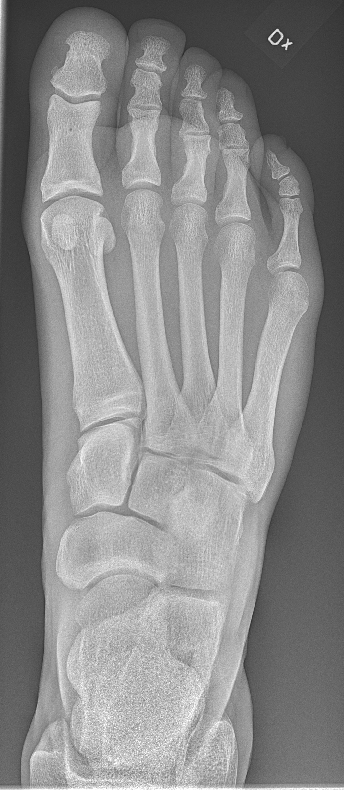

Ficha del catálogo
Radiografía de pie normal (dorsoplantar)
- Sistema
- Óseo
- Modalidad
- RX
- Región
- Pie
- Dificultad
- Básico
Proyección básica del pie que despliega metatarsianos y falanges. Se emplea en traumatismos, deformidades y en el seguimiento del pie diabético, donde detectar cambios óseos precoces resulta decisivo.
Técnica
Paciente sentado con la planta apoyada sobre el receptor y la rodilla flexionada. El rayo central se angula 10-15° hacia el talón para desplegar mejor el mediopié.
Qué observar
- Alineación de los metatarsianos y de las articulaciones metatarsofalángicas
- Base del quinto metatarsiano, localización clásica de fracturas por avulsión
- Articulación de Lisfranc: La alineación entre el segundo metatarsiano y la segunda cuña debe ser perfecta
- Huesos sesamoideos bajo la cabeza del primer metatarsiano, que son normales
- Signos de pie diabético: Erosiones, destrucción ósea, gas en partes blandas
- Fracturas de estrés en metatarsianos, que al inicio solo se manifiestan por una discreta reacción perióstica
Hallazgos
Pie con alineación conservada, corticales continuas y espacios articulares normales.
Perlas
La lesión de Lisfranc se pasa por alto con facilidad y deja secuelas importantes. Ante un pie doloroso tras un traumatismo, verificar que el borde medial del segundo metatarsiano esté alineado con el borde medial de la segunda cuña es un gesto rápido que evita errores.
Diagnóstico diferencial
- Lesión de Lisfranc
- Se pierde la alineación entre el borde medial del segundo metatarsiano y el borde medial de la segunda cuña, a veces con un pequeño fragmento óseo en el espacio intercuneiforme.
- Fractura por estrés de metatarsiano
- Al inicio solo hay una discreta reacción perióstica o un engrosamiento cortical focal en la diáfisis, sin trazo evidente y sin antecedente traumático agudo.
- Fractura por avulsión de la base del quinto metatarsiano
- El trazo es transversal a la tracción tendinosa en la tuberosidad, perpendicular al eje del hueso, a diferencia de la apófisis normal, cuyo eje es paralelo.
- Osteoartropatía neuropática del pie diabético
- Predominan fragmentación, desorganización y luxación del mediopié con densidad ósea conservada o aumentada, sin lesión de partes blandas sobreañadida obligatoria.
- Osteomielitis del pie diabético
- Hay destrucción cortical focal y pérdida trabecular bajo una úlcera, con edema y a veces gas en partes blandas adyacentes.
- Hallux valgus y deformidades degenerativas
- Se miden ángulos anómalos entre el primer metatarsiano y la falange proximal, con osteofitos y subluxación sesamoidea, en ausencia de trazo agudo.
Simuladores
- La apófisis del quinto metatarsiano en el niño es una línea longitudinal paralela al eje del hueso, y no debe informarse como fractura, que sería transversal.
- Los huesos accesorios del pie, como el navicular accesorio y el os peroneum, son corticalizados y de contorno liso.
- Los sesamoideos bajo la cabeza del primer metatarsiano son normales y con frecuencia bipartitos, con bordes regulares.
- La superposición del mediopié en una proyección sin angulación puede ocultar una diástasis de Lisfranc (la angulación de 10 a 15° al talón la despliega).
Por modalidad
- RX
- Estudio inicial, preferentemente en carga para valorar alineación real, deformidades y diástasis del Lisfranc.
- TC
- Detecta fracturas ocultas del mediopié y del tarso, cuantifica la diástasis y la afectación articular y planifica la cirugía.
- RM
- Es la técnica más sensible para osteomielitis, fractura por estrés, edema óseo y para distinguirla del pie neuropático.
- US
- Valora partes blandas superficiales, neuroma interdigital, fascia plantar, tendones y colecciones, y guía punciones.
Protocolo
En la dorsoplantar el paciente se sienta con la rodilla flexionada y la planta apoyada sobre el receptor, con el rayo central angulado entre 10 y 15° hacia el talón y dirigido a la base del tercer metatarsiano, lo que despliega el mediopié. Se completa con una oblicua interna de unos 30 a 45° y con una lateral. Cuando se sospecha lesión de Lisfranc conviene realizar las proyecciones en carga y compararlas con el pie contralateral, ya que la diástasis puede aparecer solo bajo el peso corporal.
Clasificación
Las fracturas de la base del quinto metatarsiano se dividen clásicamente en tres zonas: Avulsión de la tuberosidad, fractura de Jones en la unión metafisodiafisaria, con peor vascularización y mayor riesgo de seudoartrosis, y fractura diafisaria proximal por estrés. Las lesiones de Lisfranc se clasifican según el patrón de desplazamiento en homolaterales, aisladas o divergentes. En el pie diabético se emplean sistemas clínicos de graduación de la úlcera y de la profundidad, como la clasificación de Wagner, que orientan la búsqueda de osteomielitis.
Errores frecuentes
- Informar como normal un pie con lesión de Lisfranc sutil por no verificar la alineación de la segunda columna ni realizar estudio en carga.
- Confundir la apófisis normal del quinto metatarsiano en el niño con una fractura.
- Descartar fractura por estrés con una radiografía inicial normal, cuando puede tardar semanas en hacerse visible.
- Atribuir a osteomielitis toda alteración ósea del pie diabético sin considerar la osteoartropatía neuropática, que exige un abordaje distinto.

pie metatarsianos lisfranc sesamoideos normal pie diabetico